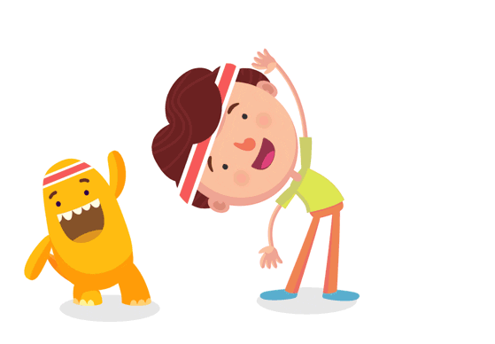

A HEALTHY MIND RESIDES IN A HEALTHY BODY

The club allows students to explore areas and subjects that they may not have access to, during their classroom studies
After school activities play a positive role in keeping the kids active and healthy.To stay healthy,the youth needs at least 60 minutes of physical activity daily.There is not enough time during the school hours to get it all.
PHYSICAL ACTIVITY CAN TEACH LIFE SKILLS SUCH AS:
- TEAMWORK
- PATIENCE
- MOTIVATION
- CONCENTRATION
| INDOOR GAMES |
OUTDOOR GAMES |
|---|
| CHESS | CRICKET |
| TABLE TENNIS | HANDBALL |
| CARROM BOARD | FOOTBALL |